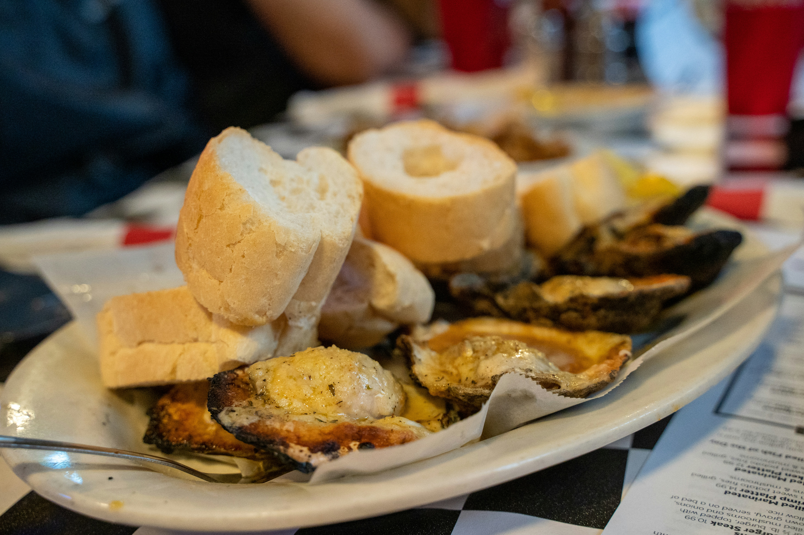
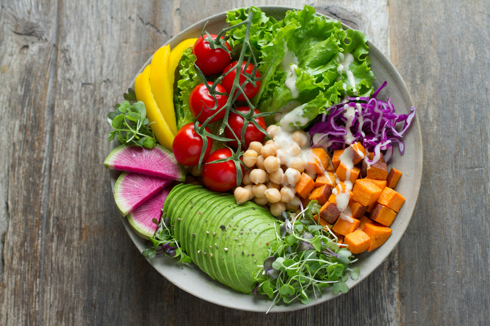
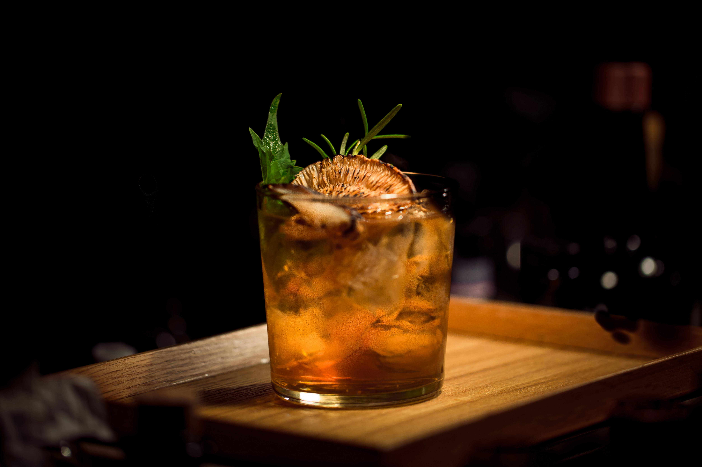
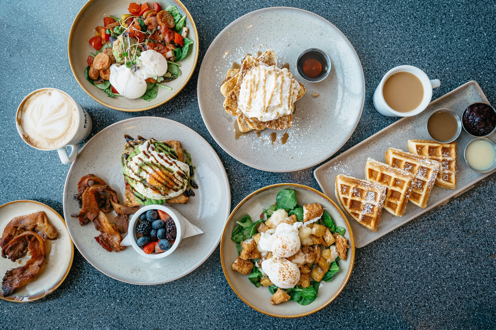

Nos menus

Un voyage au cœur de la gastronomie bordelaise. Entrée, plat et dessert mijotés avec des produits du terroir local.
Voir le menu
Légèreté et fraîcheur au rendez-vous. Des légumes de saison sublimés par nos chefs pour une expérience végétale inoubliable.
Voir le menu
L'excellence dans votre assiette. Foie gras, magret de canard et dessert gastronomique pour vos événements les plus raffinés.
Voir le menu
Le meilleur de la Gironde réuni. Huîtres du Bassin d'Arcachon, agneau de Pauillac et fromages affinés du Sud-Ouest.
Voir le menu
Une cuisine généreuse et colorée, 100% végétale. Des recettes inventives qui mettent les légumes à l'honneur.
Voir le menu
Un menu spécialement conçu pour les petits gourmands. Des saveurs douces et équilibrées pour ravir toute la famille.
Voir le menu
Idéal pour vos réceptions debout. Une sélection de mignardises salées et sucrées préparées avec soin par nos chefs.
Voir le menu
Le dimanche comme on l'aime. Viennoiseries maison, œufs brouillés, charcuteries et jus de fruits frais au programme.
Voir le menu
Les saveurs chaleureuses de la saison. Champignons des bois, châtaignes et gibier pour un repas tout en réconfort.
Voir le menu
Célébrez vos moments précieux avec élégance. Un menu sushi pour 2 personnes fais par nos soins avec champagne et mets fins.
Voir le menu
Parfait pour vos déjeuners d'affaires. Efficace, raffiné et servi dans les règles de l'art pour impressionner vos partenaires.
Voir le menu
Chaque semaine une nouvelle surprise. Nos chefs composent ce menu selon les arrivages frais du marché de Bordeaux.
Voir le menu